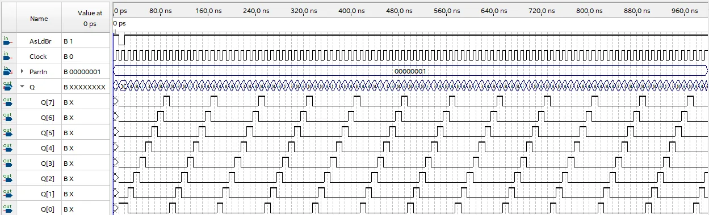
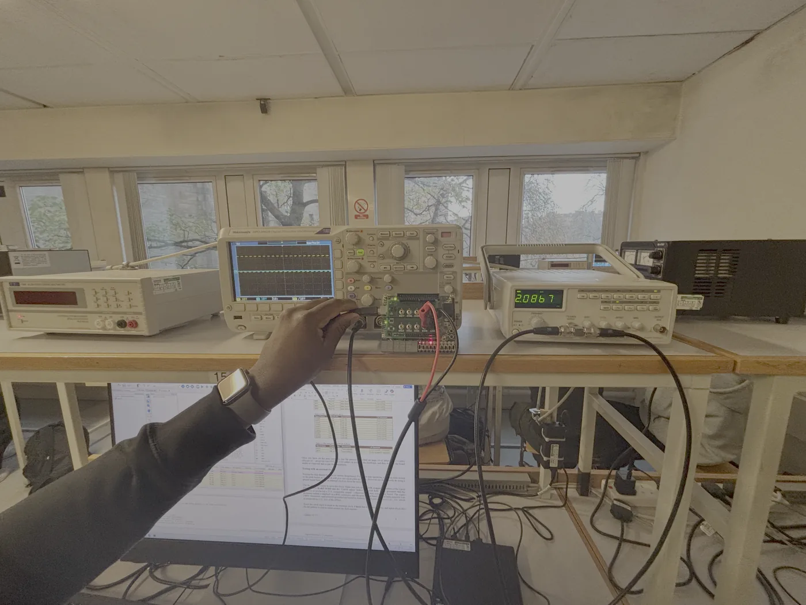

The ring counter
I converted a provided 8-bit shift register into a ring counter in Quartus's block editor by feeding its last output back to its serial input and parallel-loading 00000001. I checked reset and shifting in a waveform simulation before programming the board, assigned the pins, then clocked it from a push-button and from an external signal generator, checking the clock on an oscilloscope. The pattern repeats every eight clock cycles.

